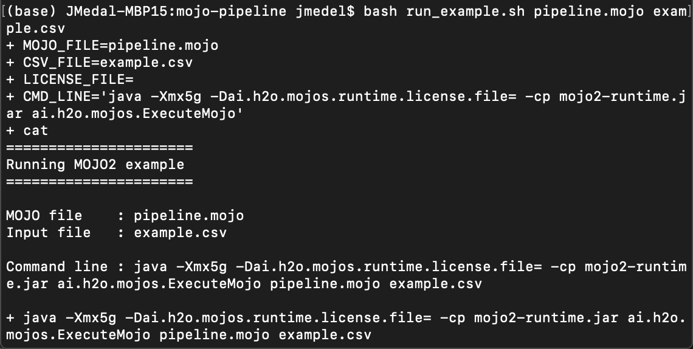
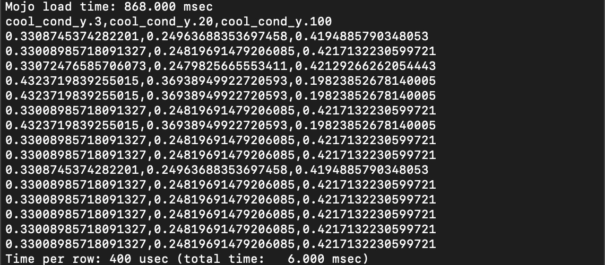
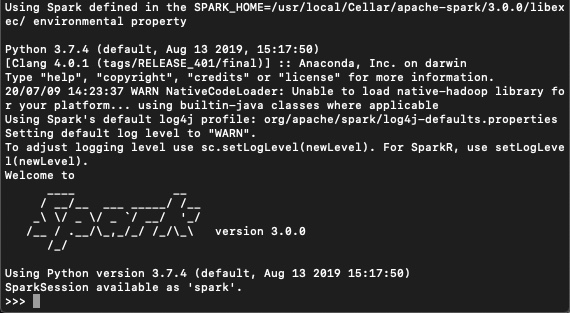
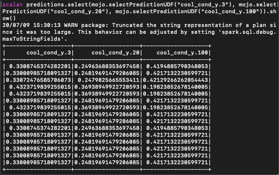
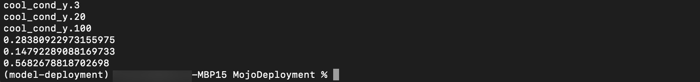

Machine Learning Model Deployment is the process of making your model available in production environments, so they can be used to make predictions for other software systems [1]. Before model deployment, feature engineering occurs in the form of preparing data that later on will be used to train a model [2]. Driverless AI Automatic Machine Learning (AutoML) combines the best feature engineering and one or more machine learning models into a scoring pipeline [3][4]. The scoring pipeline is used to score or predict data when given new test data [5]. The scoring pipeline comes in two flavors. The first scoring pipeline is a Model Object, Optimized(MOJO) Scoring Pipeline, which is a standalone, low-latency model object designed to be easily embeddable in production environments. The second scoring pipeline is a Python Scoring Pipeline, which has a heavy footprint that is all Python and uses the latest libraries of Driverless AI to allow for executing custom scoring recipes[6].
By the end of this tutorial, you will predict the cooling condition for a Hydraulic System Test Rig by deploying an embeddable MOJO Scoring Pipeline into Java Runtime using Java, Sparkling Water, and PySparkling. The Hydraulic System Test Rig data comes from the UCI Machine Learning Repository: Condition Monitoring of Hydraulic Systems Data Set. Hydraulic System Test Rigs are used to test components in Aircraft Equipment, Ministry of Defense, Automotive Applications, and more [7]. This Hydraulic Test Rig is capable of testing a range of flow rates that can achieve different pressures with the ability to heat and cool to simulate testing under different conditions [8]. Testing the pressure, volume flow, and temperature is possible by Hydraulic Test Rig sensors and digital displays. The display panel alerts the user when a criterion is met, displaying either a green or red light[8]. A filter blockage panel indicator is integrated into the panel to ensure the Hydraulic Test Rig's oil is maintained [8]. The cooling filtration solution is designed to minimize power consumption and expand the life of the Hydraulic Test Rig. We are predicting cooling conditions for Hydraulic System Predictive Maintenance. When the cooling condition is low, our prediction tells us that the cooling of the Hydraulic System is close to total failure and we may need to look into replacing the cooling filtration solution soon.

Figure: Hydraulic Test Rig General Cylinder Diagram
The Hydraulic Test Rig consists of a primary and secondary cooling filtration circuit with pumps that deliver flow and pressure to the oil tank. The oil tank box at the bottom. There is a pressure relief control valve for controlling the rising and falling flows. There is a pressure gauge for measuring the pressure.
References
[1] H2O.ai Community AI Glossary: Machine Learning Model Deployment
[2] H2O.ai Community AI Glossary: Feature Engineering
[3] H2O.ai Community AI Glossary: Automatic Machine Learning (AutoML)
[4] H2O.ai Community AI Glossary: Machine Learning Model
[5] H2O.ai Community AI Glossary: Scoring Pipeline
[6] H2O.ai Community AI Glossary: Model Object, Optimized (MOJO) Scoring Pipeline
- Skilled in Java Object Oriented Programming
- Driverless AI Environment
- Driverless AI License
- The license is needed to use the MOJO2 Java Runtime API to execute the MOJO Scoring Pipeline for making predictions
- 21 day trial license
- If you need to purchase a Driverless AI license, reach out to our sales team via the contact us form
- Basic knowledge of Driverless AI or completion of the following tutorials:
Create Environment Directory Structure
Create directory structure for DAI MOJO Java Projects
# Create directory where the mojo-pipeline/ folder will be stored
mkdir $HOME/dai-mojo-java/
Set Up Driverless AI MOJO Requirements
Download MOJO Scoring Pipeline
1. If you have not downloaded the MOJO Scoring Pipeline, go to Tutorial 4B: Scoring Pipeline Deployment Templates, then go to Task 1: Set Up Environment, then Download MOJO Scoring Pipeline to download it. When finished, come back to this tutorial.
2. Move the mojo.zip file to dai-mojo-java/ folder and then extract it:
cd $HOME/dai-mojo-java/
mv $HOME/Downloads/mojo.zip .
unzip mojo.zip
Install MOJO2 Java Runtime Dependencies
3. Download and install Anaconda
# Download Anaconda
wget https://repo.anaconda.com/archive/Anaconda3-2020.02-Linux-x86_64.sh
# Install Anaconda
bash Anaconda3-2020.02-Linux-x86_64.sh
4. Create virtual environment and install required packages
# Install Python 3.6.10
conda create -y -n model-deployment python=3.6
conda activate model-deployment
# Install Java
conda install -y -c conda-forge openjdk=8.0.192
# Install Maven
conda install -y -c conda-forge maven
Set Driverless AI License Key
5. Set the Driverless AI License Key as a temporary environment variable
# Set Driverless AI License Key
export DRIVERLESS_AI_LICENSE_KEY="{license-key}"
Install Sparkling Water
1. Download and install Spark if not already installed from Sparks Download page.
- Choose Spark release 3.0.0
- Choose package type: Pre-built for Hadoop 2.7 and later
2. Point SPARK_HOME to the existing installation of Spark and export variable MASTER.
export SPARK_HOME="/path/to/spark/installation"
# To launch a local Spark cluster.
export MASTER="local[*]"
3. Download Sparkling Water and then move Sparkling Water to the HOME folder and extract it:
cd $HOME
mv $HOME/Downloads/sparkling-water-3.30.0.6-1-3.0.zip .
unzip sparkling-water-3.30.0.6-1-3.0.zip
cd sparkling-water-3.30.0.6-1-3.0
MOJO Scoring Pipeline Files
After downloading the MOJO scoring pipeline, the mojo-pipeline folder comes with many files. The files that are needed to execute the MOJO scoring pipeline include pipeline.mojo, mojo2-runtime.jar, and example.csv. The file that helps with running the pipeline quickly includes run_example.sh. The pipeline.mojo is the standalone scoring pipeline in MOJO format. This pipeline file contains the packaged feature engineering pipeline and the machine learning model. The mojo2-runtime.jar is the MOJO Java API. The example.csv contains sample test data.
Embedding the MOJO into the Java Runtime
If you have gone through the earlier scoring pipeline deployment tutorials, you have seen how we deploy the MOJO Scoring Pipeline to a server or serverless instance. Some clients interact with the server to trigger it to execute the MOJO to make predictions. An alternative way to deploy the MOJO Scoring Pipeline is to embed it directly into the Java Runtime Environment where your application is running. So if you are building a Java application using an Integrated Development Environment (IDE) or a text editor, you can import the MOJO Java API. Then use it to load the MOJO, put your test data into a MOJO frame, perform predictions on the data, and return the results.
Resources
You will execute the MOJO scoring pipeline in the Java Runtime Environment using Java, PySparkling, and Sparkling Water.
Batch Scoring via Run ExecuteMojo Java Example
You will run the run_example.sh script that came with the mojo-pipeline folder. This script requires the mojo file, csv file, and license file. It runs the Java ExecuteMojo example program and the mojo makes predictions for a batch of Hydraulic cooling condition.
Since we already have our license file path specified as an environment variable, we will pass in the path to the mojo file and example csv data to the run_example.sh and then run it:
cd $HOME/dai-mojo-java/mojo-pipeline/
bash run_example.sh pipeline.mojo example.csv


This classification output is the batch scoring done for our Hydraulic System cooling condition. You should receive classification probabilities for cool_cond_y.3, cool_cond_y.20, and cool_cond_y.100. The 3 means the Hydraulic cooler is close to operating at total failure, 20 means it is operating at reduced efficiency and 100 means it is operating at full efficiency.
Similarly, we could execute run_example.sh without passing arguments to it by creating temporary environment variables for mojo pipeline file and example csv file paths.
export MOJO_PIPELINE_FILE="$HOME/dai-mojo-java/mojo-pipeline/pipeline.mojo"
export EXAMPLE_CSV_FILE="$HOME/dai-mojo-java/mojo-pipeline/example.csv"
Then try executing run_example.sh and you should get similar results as above.
bash run_example.sh
Likewise, we can also execute the ExecuteMojo Java application directly as below and get similar results as above:
java -Dai.h2o.mojos.runtime.license.key=$DRIVERLESS_AI_LICENSE_KEY -cp mojo2-runtime.jar ai.h2o.mojos.ExecuteMojo $MOJO_PIPELINE_FILE $EXAMPLE_CSV_FILE
Batch Scoring via Run PySparkling Program
Start PySparkling to enter PySpark interactive terminal:
cd $HOME/sparkling-water-3.30.0.6-1-3.0
./bin/pysparkling --jars $DRIVERLESS_AI_LICENSE_KEY

Now that we are in the PySpark interactive terminal, we will import some dependencies:
# First, specify the dependency
import os.path
from pysparkling.ml import H2OMOJOPipelineModel,H2OMOJOSettings
We configure the H2O MOJO Settings to ensure the output columns are named properly and then load the MOJO scoring pipeline:
# The 'namedMojoOutputColumns' option ensures the output columns are named properly.
settings = H2OMOJOSettings(namedMojoOutputColumns = True)
homePath = os.path.expanduser("~")
# Load the pipeline. 'settings' is an optional argument.
mojo = H2OMOJOPipelineModel.createFromMojo(homePath + "/dai-mojo-java/mojo-pipeline/pipeline.mojo", settings)
Next load the example csv data as Spark's DataFrame
# Load the data as Spark's Data Frame
dataFrame = spark.read.csv(homePath + "/dai-mojo-java/mojo-pipeline/example.csv", header=True)
Finally, we will run batch scoring on the Spark DataFrame using mojo transform and get the scored data for the hydraulic cool condition:
# Run the predictions. The predictions contain all the original columns plus the predictions added as new columns
predictions = mojo.transform(dataFrame)
# Get the predictions for desired cols using array with selected col names
predictions.select([mojo.selectPredictionUDF("cool_cond_y.3"), mojo.selectPredictionUDF("cool_cond_y.20"), mojo.selectPredictionUDF("cool_cond_y.100")]).collect()

# Quit PySparkling
quit()
The MOJO predicted the Hydraulic System cooling condition for each row within the batch of Hydraulic System test data we passed to it. You should receive classification probabilities for cool_cond_y.3, cool_cond_y.20, and cool_cond_y.100. The 3 means the Hydraulic cooler is close to operating at total failure, 20 means it is operating at reduced efficiency and 100 means it is operating at full efficiency.
So that is how you execute the MOJO scoring pipeline to do batch scoring using PySparkling.
Batch Scoring via Run Sparkling Water Program
Start Sparkling Water to enter Spark interactive terminal:
cd $HOME/sparkling-water-3.30.0.6-1-3.0
./bin/sparkling-shell --jars $DRIVERLESS_AI_LICENSE_KEY


Now that we are in the Spark interactive terminal, we will import some dependencies:
// First, specify the dependency
import ai.h2o.sparkling.ml.models.{H2OMOJOPipelineModel,H2OMOJOSettings}
We configure the H2O MOJO Settings to ensure the output columns are named properly and then load the MOJO scoring pipeline:
// The 'namedMojoOutputColumns' option ensures the output columns are named properly.
val settings = H2OMOJOSettings(namedMojoOutputColumns = true)
val homePath = sys.env("HOME")
// Load the pipeline. 'settings' is an optional argument.
val mojo = H2OMOJOPipelineModel.createFromMojo(homePath + "/dai-mojo-java/mojo-pipeline/pipeline.mojo", settings)
Next load the example csv data as Spark's DataFrame
// Load the data as Spark's Data Frame
val dataFrame = spark.read.option("header", "true").csv(homePath + "/dai-mojo-java/mojo-pipeline/example.csv")
Finally, we will run batch scoring on the Spark DataFrame using mojo transform and get the scored data for cool efficiency:
// Run the predictions. The predictions contain all the original columns plus the predictions
// added as new columns
val predictions = mojo.transform(dataFrame)
# Get the predictions for desired cols sep by comma with selected col names
predictions.select(mojo.selectPredictionUDF("cool_cond_y.3"), mojo.selectPredictionUDF("cool_cond_y.20"), mojo.selectPredictionUDF("cool_cond_y.100")).show()

# Quit Sparkling Water
:quit
The MOJO predicted the Hydraulic System cooling condition for each row within the batch of Hydraulic System test data we passed to it. You should receive classification probabilities for cool_cond_y.3, cool_cond_y.20, and cool_cond_y.100. The 3 means the Hydraulic cooler is close to operating at total failure, 20 means it is operating at reduced efficiency and 100 means it is operating at full efficiency.
So that is how you execute the MOJO scoring pipeline to do batch scoring using Sparkling Water.
Resources
- H2O.ai Doc: Driverless AI MOJO Scoring Pipeline - Java Runtime
- Stackoverflow: Select columns in Pyspark Dataframe
- ai.h2o javadoc for PySparkling: sparkling-water-scoring_2.11
- H2O.ai Doc: Driverless AI MOJO Scoring Pipeline - Java Runtime
- Stackoverflow: Select Specific Columns from Spark DataFrame
- ai.h2o javadoc for Sparkling Water: sparkling-water-scoring_2.11
The mojo can also predict a Hydraulic System cooling condition for each individual Hydraulic System row of test data. You will build a Java, PySparkling, and Sparkling Water program to execute the mojo to do interactive scoring on individual Hydraulic System rows.
Interactive Scoring via Run Custom Java Program
Create a MojoDeployment folder and go into it:
cd $HOME/dai-mojo-java/apps/
mkdir MojoDeployment
cd MojoDeployment
Make sure the java runtime file mojo2-runtime.jar and pipeline.mojo is located in this folder:
cp $HOME/dai-mojo-java/mojo-pipeline/mojo2-runtime.jar .
cp $HOME/dai-mojo-java/mojo-pipeline/pipeline.mojo .
In the H2O documentation Driverless AI MOJO Scoring Pipeline - Java Runtime, they give us a Java code example to predict a CAPSULE value from an individual row of data, we need to modify this code for our Hydraulic System data. Create a Java file called ExecuteDaiMojo.java.
Based on our Hydraulic System example.csv data, we can take the header row and a row of data to replace the data in rowBuilder in the Java code example. So, the Java code example becomes:
import java.io.IOException;
import ai.h2o.mojos.runtime.MojoPipeline;
import ai.h2o.mojos.runtime.frame.MojoFrame;
import ai.h2o.mojos.runtime.frame.MojoFrameBuilder;
import ai.h2o.mojos.runtime.frame.MojoRowBuilder;
import ai.h2o.mojos.runtime.lic.LicenseException;
import ai.h2o.mojos.runtime.utils.CsvWritingBatchHandler;
import com.opencsv.CSVWriter;
import java.io.BufferedWriter;
import java.io.OutputStreamWriter;
import java.io.Writer;
public class ExecuteDaiMojo {
public static void main(String[] args) throws IOException, LicenseException {
// Load model and csv
String homePath = System.getProperty("user.home");
final MojoPipeline model = MojoPipeline.loadFrom(homePath + "/dai-mojo-java/mojo-pipeline/pipeline.mojo");
// Get and fill the input columns
final MojoFrameBuilder frameBuilder = model.getInputFrameBuilder();
final MojoRowBuilder rowBuilder = frameBuilder.getMojoRowBuilder();
rowBuilder.setValue("psa_bar", "155.6405792236328");
rowBuilder.setValue("psb_bar", "104.91106414794922");
rowBuilder.setValue("psc_bar", "0.862698495388031");
rowBuilder.setValue("psd_bar", "0.00021100000594742596");
rowBuilder.setValue("pse_bar", "8.370246887207031");
rowBuilder.setValue("psf_bar", "8.327606201171875");
rowBuilder.setValue("motor_power_watt", "2161.530029296875");
rowBuilder.setValue("fsa_vol_flow", "2.0297765731811523");
rowBuilder.setValue("fsb_vol_flow", "8.869428634643555");
rowBuilder.setValue("tsa_temp", "35.32681655883789");
rowBuilder.setValue("tsb_temp", "40.87480163574219");
rowBuilder.setValue("tsc_temp", "38.30345153808594");
rowBuilder.setValue("tsd_temp", "30.47344970703125");
rowBuilder.setValue("pump_eff", "2367.347900390625");
rowBuilder.setValue("vs_vib", "0.5243666768074036");
rowBuilder.setValue("cool_eff_pct", "27.3796");
rowBuilder.setValue("cool_pwr_kw", "1.3104666471481323");
rowBuilder.setValue("eff_fact_pct", "29.127466201782227");
frameBuilder.addRow(rowBuilder);
// Create a frame which can be transformed by MOJO pipeline
final MojoFrame iframe = frameBuilder.toMojoFrame();
// Transform input frame by MOJO pipeline
final MojoFrame oframe = model.transform(iframe);
// `MojoFrame.debug()` can be used to view the contents of a Frame
// oframe.debug();
// Output prediction as CSV
final Writer writer = new BufferedWriter(new OutputStreamWriter(System.out));
final CSVWriter csvWriter = new CSVWriter(writer, '\n', '"', '"');
CsvWritingBatchHandler.csvWriteFrame(csvWriter, oframe, true);
}
}
Now we have our ExecuteDaiMojo.java code, so let's compile it:
javac -cp mojo2-runtime.jar -J-Xms2g ExecuteDaiMojo.java
ExecuteDaiMojo.class is generated. Run this Java program to execute the MOJO:
java -Dai.h2o.mojos.runtime.license.file=$DRIVERLESS_AI_LICENSE_KEY -cp .:mojo2-runtime.jar ExecuteDaiMojo
Note: Windows users run
java -Dai.h2o.mojos.runtime.license.file=license.sig -cp .;mojo2-runtime.jar ExecuteDaiMojo

Note:
- cool_cond_y.3 = 0.28380922973155975
- cool_cond_y.20 = 0.14792289088169733
- cool_cond_y.100 = 0.5682678818702698
The MOJO predicted the cooling condition for the individual row of Hydraulic System test data we passed to it. You should receive classification probabilities for cool_cond_y.3, cool_cond_y.20, and cool_cond_y.100. The 3 means the Hydraulic cooler is close to operating at total failure, 20 means it is operating at reduced efficiency and 100 means it is operating at full efficiency.
So that is how you execute the MOJO scoring pipeline to do interactive scoring using Java directly.
Resources
Execute Scoring Pipeline for a New Dataset
There are various challenges one could do, you could do something that helps you in your daily life or job. Maybe there is a dataset you are working with, you could reproduce the steps we did above, but for your dataset, build a new experiment and execute your MOJO scoring pipeline to do batch scoring or interactive scoring.
Embed Scoring Pipeline into Existing Program
Another challenge could be to use the existing MOJO scoring pipeline we executed and instead of using the examples we shared above, integrate the scoring pipeline into an existing Java, Python or Scala program.
Refer to H2O.ai AI Glossary for relevant Model Deployment Terms